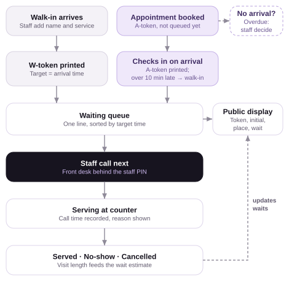
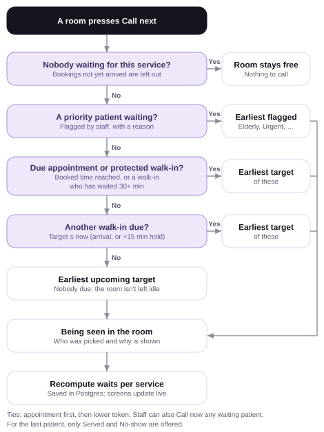

Next.js 16 and TypeScript on Vercel; shared state in Upstash Redis. A simulation: all patients are fictional.
1. Key design decisions
One ordering key: the target time. Every waiting patient has one comparable time, so "fair and in order" and
"appointments at their scheduled time" become a single rule instead of two competing queues.
Appointments join the queue only at check-in. A booking that hasn't arrived can never hold up patients who are present.
All queue logic is one pure, tested module (lib/queue.ts): no I/O, and the clock is always passed in. Every staff
action goes through a single reducer that the server runs, so the unit tests cover exactly the code the live app uses.
The server decides who is next and writes with a compare-and-set on a version number, so two staff pressing "Call next"
at the same moment can never call the same patient.
The wait estimate replays the call-next rule instead of using a separate formula, so the estimate and the real order can't disagree.
Every call is explained on screen, e.g. "A-003 called: appointment at 10:30, the earliest due target".
Privacy by design. The public display and the printed token slip show only the token (and the first initial on the display);
full names never leave the staff view. Only a name and a service are collected.
Staff access with one shared PIN: a signed 12-hour session cookie, a lock-out after 5 wrong tries, and checks in both the proxy
and every staff API route. The waiting-room display stays public.
Polling every 3 s instead of WebSockets: simple and robust on serverless hosting, at the cost of up to 3 s of delay.
2. Assumptions
One clinic, timezone Asia/Dhaka. Tokens W-001 / A-001 restart each day.
1 counter by default (configurable 1–4); any counter serves any patient.
Grace period: 10 min (configurable).
Default visit lengths: consultation 15, follow-up 10, blood test 5, vaccination 5, prescription renewal 5 min.
Bookings are for today, in 5-minute slots, at or after the current time.
No double-booking: overlapping appointments may not exceed the number of counters.
No automatic no-shows: staff decide on overdue bookings.
A no-show who returns joins again as a new walk-in. No payments or SMS.
3. Queue-handling logic
Patient
Target time
Walk-in
Arrival time
Appointment, checked in by scheduled time + grace (on time or early)
Scheduled time
Appointment, checked in after the grace period
Arrival time: joins as a walk-in, keeps its A-token, flagged "Late, now walk-in"
Call next (per counter): (1) nobody checked in → the counter stays free; (2) someone is due (target ≤ now) → call the
earliest target; (3) nobody due → call the earliest upcoming target so the counter isn't idle, the only way an early appointment is
seen early; (4) ties → appointment first, then the lower token number. A booking past its grace period without arriving is flagged
Overdue for staff to check in, mark a no-show or cancel. Edits are allowed until a patient is called.

Figure 1. Patient workflow

Figure 2. Call-next decision
4. Waiting-time calculation
Expected visit length (per service) = mean of the last 5 served visits (called → served), each clamped to 1 min … 3 × the default.
Before any data exists, the default is used. No-shows and cancellations never count.
Each counter is free at now if idle, otherwise now + max(expected − elapsed, 1 min).
Forward simulation: repeatedly take the counter that frees up first (time t), apply the same call-next rule at t,
start that patient at t, and mark the counter free again at t + expected. Wait = start − now; the patient's position is their order in this projection.
Shown as "Due now" when ≤ 2 min, otherwise "~X min" rounded up to the next 5. Recomputed after every action and every 3-second refresh.
Worked example (also a unit test): 1 counter, now 10:00, the patient being served is expected to finish at 10:06, and no visit data yet.
Patient
Target
Service
Projected start
Wait
Shown
W-001 walk-in
09:50
Consultation (15)
10:06
6 min
~10 min
W-002 walk-in
09:58
Vaccination (5)
10:21
21 min
~25 min
A-001 appointment, checked in early
10:05
Follow-up (10)
10:26
26 min
~30 min
A-001 doesn't overtake the two walk-ins, because they have earlier targets. Had W-002 arrived at 10:08 instead, A-001 (target 10:05) would be called first, at 10:21.
5. Trade-offs and limitations
When an appointment comes due, a walk-in who arrived after its slot may wait about one extra visit. In return, appointments are honoured
and nobody is overtaken by a later target. Early appointments don't jump the queue; late ones lose their slot.
Idle-fill keeps counters busy, but can leave a counter occupied just as a later slot comes due. The estimate already includes this.
The overlap check counts every booking in the window, so with 2+ counters it can refuse a slot that would just fit. It's simple to explain to patients.
Waits are estimates, not promises: they converge as real visit lengths accumulate, and averaging softens one unusually long visit.
Limitations: one shared PIN rather than individual staff accounts (no record of who pressed a button); one queue per deployment;
without Redis (local development) the queue lives in one server process's memory.